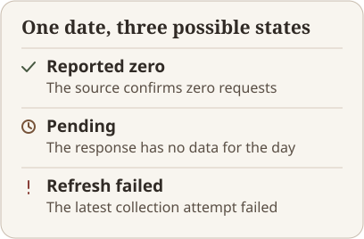

Engineering notes
When a missing day looks like zero
One day of website traffic was missing from my daily briefing. Here’s how I checked the recovery and how to tell a reported zero from a gap in your own data.
The warehouse and dashboard had to agree
I went back to the Cloudflare feed for the day that was missing from the briefing I use for my app and websites. The recovery inserted one row. I checked that the count in BigQuery matched the count displayed for that date in the dashboard. I also checked for duplicate rows in the date range I reviewed.
That verified the recovered day for one feed. Other discrepancies in the same date range were still open. A successful backfill gave me a figure I could use for that day. It also gave me a useful way to think about what a blank dashboard cell can hide.
Find the first place the date disappears
If I were investigating another gap, I’d start by writing down the expected record: one website, one metric and one reporting day. A date shown in the browser can differ from the source’s reporting date around midnight. I’d check the source’s day boundary and use that same date in the warehouse query and the dashboard filter.
At the source, I’d check whether the response covers the full day and includes the requested website and metric. An empty result could mean the provider has yet to publish the report, that the request covered a different period, or that the provider represents zeros by omitting rows. The source’s documented behaviour determines which interpretation I can use.
Then I’d look for that exact key in the warehouse. If the source returned a value and the warehouse has no row, I’d examine the import. If the warehouse contains the right row and the dashboard is blank, I’d inspect the report’s refresh, date filter and selected data source. That narrows the investigation before I rerun anything.
After a repair, I’d reopen the report and compare the affected day again. I’d also check for duplicate keys and compare the neighbouring dates with their earlier values. A matching total can hide a change elsewhere in the range.
An empty result can call for two different actions
If the source establishes that there were zero requests for a day, I can plot zero. A fetch can also succeed while the requested day is still absent from the report. In that case, I’d mark the day pending and check again when the source is expected to publish it.
If the fetch fails, I’d show the refresh failure and keep the last confirmed figures visible with their original reporting dates. A new attempt can happen several days after the figures it requests. Showing the attempt time beside the coverage date tells me when the last attempt ran and how far the data goes.

Build the report from the dates you expect
A chart query that starts with observed counts can return 5 October and 7 October with no row for the day between. Depending on the chart settings, the line can join those two points and make the series look continuous. I’d start from the expected dates, then join the available counts so the report has somewhere to show the missing day.
Run this fictional example in SQLite. It uses one website and one metric, so the join only needs the date. The first day has an explicit zero. The middle day has no count. The last day has a saved count even though the latest attempt failed.
WITH expected(day) AS (
VALUES ('2026-10-05'), ('2026-10-06'), ('2026-10-07')
), counts(day, requests) AS (
VALUES ('2026-10-05', 0), ('2026-10-07', 21)
), attempts(day, status) AS (
VALUES ('2026-10-05', 'received'),
('2026-10-06', 'pending'),
('2026-10-07', 'failed')
)
SELECT expected.day, counts.requests, attempts.status
FROM expected
LEFT JOIN counts USING (day)
LEFT JOIN attempts USING (day)
ORDER BY expected.day;Read the count and the collection status together
The query returns zero, NULL and 21 in date order. The zero can be plotted. I’d leave the NULL as a visible gap and show Pending beside the date. The final row keeps its confirmed 21 while the status tells me the latest refresh failed. If the chart draws across NULL, I’d change its settings or mark the gap so the reader can see it.
I’d also show the last collection attempt separately from the period covered. A refresh today can still leave yesterday missing, and a recent confirmed date can sit after a gap in the same week. Before comparing totals for two weeks, I’d check that both weeks have the coverage the comparison assumes.
A late result should fill one gap
In this fictional sequence, a successful fetch leaves 6 October pending. The next fetch returns 12 requests. For this article, Codex ran a local SQLite test that inserted the result, applied the same input again and simulated a later fetch failure.
The write used a key made up of website, metric and reporting day. The first insert found no row for that key. The replay found the same key and was skipped, so the replay contributed no additional requests to the total.
Before backfilling a real report, I’d check that the incoming batch and the existing table each have one row per key. If a new source response returns 15 for a day already stored as 12, that is a correction to investigate. The insert-if-absent rule used in this example would keep 12. I’d handle corrections explicitly, with a record of the previous and revised values, so a repeated import and a provider revision have different outcomes.
| Attempt | What the reader sees | Stored count for 6 October |
|---|---|---|
| Day absent from the response | Pending | None |
| Day arrives with 12 requests | 12 requests | 12 in one row |
| Same result arrives again | 12 requests | 12 in one row |
| A later fetch fails | Refresh failed. Last confirmed count: 12 | 12 in one row |
Test the report with a date you control
Use a short range and write down which days should have values. Feed in a confirmed zero, leave one expected day absent and simulate a failed fetch. Open the report and check which points are plotted, what the status says and which dates still have their last confirmed figures.
Then supply the missing day, retry the same input and reopen the report. Check the one row for that day and the value plotted against it. If you can trace both back to the same source response and the neighbouring dates are unchanged, you have evidence for the recovery you just tested.
The takeaway
Keep the reporting date, the last collection result and the count separate. Show zero when the source establishes zero.
Sources
Thanks for reading.
These are my personal views and experiences. They do not represent the views of Visokio or any other organisation.
Share this note